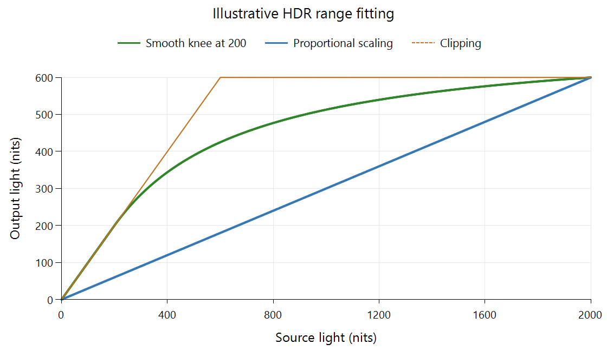

HDR-to-HDR Tone Mapping
A source contains 2,000-nit highlights, while the intended HDR output has a usable peak of 600 nits. The source and destination are both HDR, but their available light ranges differ. HDR-to-HDR tone mapping fits that image to the smaller range while keeping an HDR output representation.
Establish the actual source and destination
For PQ material, the transfer function supplies absolute reference-light requests. A source's mastering maximum describes the grading display, while content bounds and picture analysis describe what the produced sequence uses. These are different inputs to selecting the range that needs fitting.
The destination is also a rendering target. Its useful peak depends on the relevant area and duration, and its black floor and color volume constrain the reproduced picture. A supported HDR signal format does not define all those physical limits.
The worked example below chooses zero black, a source peak of 2,000, and a target peak of 600. It is a constructed brightness relationship that makes the decisions visible.
Preserve a lower interval and fit the highlights
Let L be source light in nits. Leave values through 200 unchanged. Above 200, define d = L − 200 and use:
T(L) = 200 + d / (1 + 7d/3,600)
At the transition, d is zero and the output is 200. The initial upper slope is one, matching the lower unchanged segment. As d grows, the denominator grows and the response flattens. At L = 2,000, d = 1,800, the denominator is 4.5 and output is 200 + 400 = 600 nits.

Original neutral-gray example for the stated ranges. It is not a measured Emby preset or the specified BT.2390 function.
| Source light | Smooth-knee output | Uniform scaling by 0.3 |
|---|---|---|
| 100 nits | 100 nits | 30 nits |
| 200 nits | 200 nits | 60 nits |
| 500 nits | About 389.47 nits | 150 nits |
| 1,000 nits | About 513.04 nits | 300 nits |
| 2,000 nits | 600 nits | 600 nits |
All source values in the declared range fit. Compared with uniform scaling, the constructed function devotes more light to the lower region. Compared with clipping, it retains differences above the destination ceiling instead of merging them.
Those differences are compressed: a 1,000-nit separation between the last two source rows becomes about 86.96 nits. The lower interval is preserved because it was a deliberate constraint; another mapper can choose a different transition and redistribute ordinary tones too.
Prepare an HDR output with the new light meaning
Interpreting the input, applying the mapping, and encoding the result are separate operations. In the example, a 2,000-nit PQ neutral has a normalized input signal of about 0.827. After mapping to 600 nits, the corresponding PQ output signal is about 0.696.
Both numbers use PQ, but they describe different light requests. Keeping the original sample and only changing a peak metadata field would not perform the calculated brightness adaptation. A renderer can make the change in its presentation pipeline; a newly encoded HDR rendition needs values and signaling consistent with the prepared output.
Colored pictures add another operation. Scaling brightness can preserve linear component ratios within one color system, while the destination volume may require further saturation or hue handling. A small bright saturated light can exceed a colored-output limit even when neutral white fits. Gamut mapping explains that fitting problem.
Black-level adaptation has its own effect near the bottom. The zero-black diagram intentionally isolates highlight fitting. A screen with a higher useful black floor needs a response that accounts for lower-level separation, as discussed in the BT.2390 report.
Locate the adaptation in the playback session
With an Emby Direct Play session, the original coded video can reach the app, while the app or display still maps it to the selected output. A server transcode can instead prepare another rendition before delivery. The playback-path diagram separates those locations.
Two HDR screens can therefore produce different pictures from the same delivered file. To assess the actual fitting, inspect ordinary objects, dark separation, and bright texture in the same moving scene. The curve's source range, target, and temporal inputs explain the differences more precisely than the common HDR signal badge.
See Also
- How HDR-to-SDR Tone Mapping Works
- Peak-Luminance Detection for Tone Mapping
- Where Tone Mapping Happens in an Emby Playback Session
- Perceptual Quantizer (PQ): SMPTE ST 2084